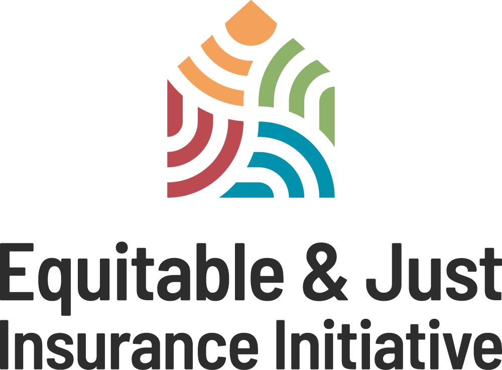
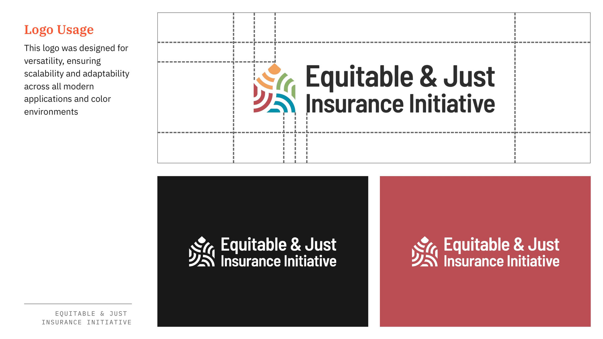

For more than fifty years, Public Citizen has been one of the most consequential consumer advocacy organizations in the country, with a name, a legacy, and a record of wins to envy. However, institutional legacy doesn't automatically translate into influence in a political conversation; especially one that moves hour by hour on social platforms. Public Citizen had no shortage of credibility or policy depth. What it lacked was the capacity to compete there — against powerful opponents who could outspend it many times over, and who had every incentive to keep the public conversation muddy. Winning attention and action in that environment meant building a voice, the reach to carry it, the production capacity to make it land, and the infrastructure to convert it.
We built it from the inside. Over several years in-house, our team ran Public Citizen's social program like a newsroom rather than a bulletin board: fast, hard-hitting, grounded in the organization's real policy expertise. People followed because someone was finally saying the obvious thing out loud, and they stayed because it came with receipts. The Twitter account grew from 30,000 followers to more than half a million, with posts quoted in the Washington Post and the New York Times and read aloud on The Late Show with Stephen Colbert. An audience that large meant vastly more people who could be moved to sign, call, show up, and pressure the officials Public Citizen had spent decades holding to account. We paired that with a genuine production capability, using animation and video to give complex policy fights a shape people could grasp in a few seconds and want to pass along.
None of that reach would have converted without the infrastructure to catch it, so we rebuilt that too. We ran the email program and the digital operations of the congressional division, managing lists at a scale where small technical decisions carry outsized consequences, and we owned the engineering underneath: platform integrations, data hygiene, deliverability, forms, landing pages. A viral post is only worth what happens after the click, and that machinery is what turns attention into signatures, calls, and pressure on Congress.
When the team came to AMP, the relationship came with it, and Public Citizen has kept calling on us for work that needs both political fluency and craft. We've turned around rapid-response creative on political timelines, including an animated spot for a mobile billboard truck, targeting the Interior Secretary over the sell-off of public lands, produced in days. We've also gone deeper and slower, designing the brand identity and building the microsite for Insure Our Future, an environmental coalition with a long roster of stakeholders and a look that had to land with all of them.
The partnership has now run from two very different vantage points, in-house and agency-side, and the work has stayed the same: making sure a fifty-year-old institution can compete for attention on the terms of the current moment.

